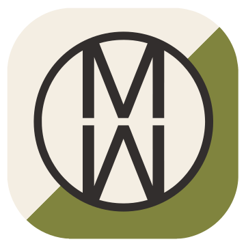
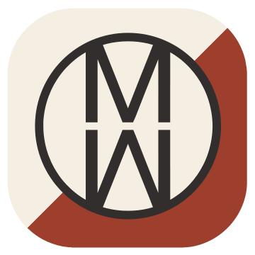
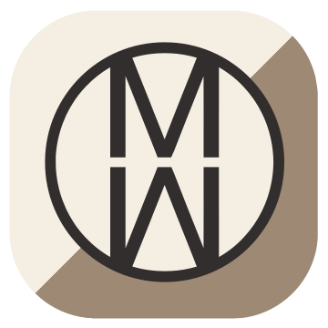

Brand architecture
The operating structure
Every product belongs to one division. Only software carries the WRKS endorsement.

Division
MW Acoustics
A Fresh Take on Audio
MW Acoustics develops next generation, hardware and software, including: FOCuS™, innovative horn designs, automated dispersion profile generation through: SONIFoRM™, Automated additive infill profiles optimized for frequency and load FoAM™, and AI-Optimized manufacturing: BRiDG™ that push the boundaries of what’s possible in Audio. All of our technologies, including, ISo–TL™, and THNSeT™ Composites have applications in High End Home Audio, Consumer Electronics, Professional Audio, and beyond.
Current products

A floor-standing speaker of exceptional quality and beauty, created through an agnostic approach to design and engineering—drawing from traditional analogue craft and advanced digital technologies wherever each best serves the sound. The result is outstanding acoustics, distinctive beauty and a singularly expressive listening experience.

SDS turns speaker building into a guided, interactive experience. Explore components and configurations—and see, in real time, how every choice affects cost, performance and the finished result.


Division
MW Heavy
Industrial Scale Solutions
MW-Heavy services Businesses in Energy, Transportation and Infrastructure.


Division
MW Deep Learning
AI-driven optimizations for manufacturing and engineering with BRiDG™
To improve efficiency and precision in our own processes, we had to develop AI tools and workflows that could design, optimize and scale our innovations. MW Deep-Learning deploys an AI Software hub leveraging LLM agents that can augment existing manufacturing workflows, automate complex engineering challenges, and drive next-generation Industrial Automation all while utilizing legacy digital manufacturing Hardware & Software.
Current products
Connect, clarify and harness your AI tools, apps, information, data and correspondence in one engineered, adaptable and highly usable system.

Division
MW Magnetics
FOCuS™ Hardware & Software.
To reduce distortion in our speaker while keeping the source signal purely analog, we had to re-engineer how magnetic motor systems are built. MW-Magnetics develops advanced magnet technologies, including variable field-coil systems, high-energy permanent magnets with novel non linear geometries, leading to precision electromagnetic solutions for industries beyond speakers such as Energy Storage, Transportation, and Industrial Automation.

Division
MW Composites
THNSeT™ composite matrix material for superior performance.
A process and formula that delivers greater strength, damping, and cost all while reducing weight, with no compromise in sustainability and scaleability. Ideal for the most demanding applications.
The high-strength, low weight, ultra-low resonance, and sustainable materials required for our speakers had not been invented. We needed to develop our own.
MW-Composites specializes in cutting-edge composite technologies, including high-performance carbon fiber, and thermoset/ thermoplastic matrices. Our innovations extend far beyond Audio, enabling breakthroughs in Aerospace, Automotive and Industrial applications.

Division
MW Additive
Revolutionizing high-performance 3D Printing with our FoAM™ Software.
No existing additive processes or materials could deliver the vibration-damping characteristics we needed for our speaker. So, we created it. MW Additive specializes in additive manufacturing Software solutions that combine automated geometries with variable constraints. Our solution works with legacy advanced polymer and metal printing technologies, enabling stronger, lighter, and more precise components for industries including Medical, Aerospace and communications.